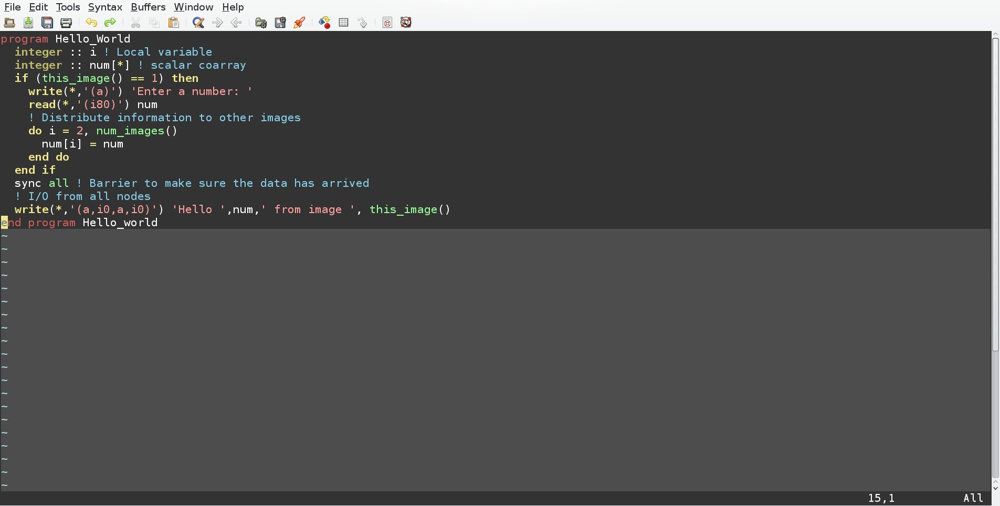

Description
Introduction
Fortran code that implements parallel programming.
Simple Program to Compute Positive and Negative Averages

Program Run - Simple Program to Compute Positive and Negative Averages
The program first inputs the number of elements to average over, and then inputs the data as reals. It then computes separately the positive and negative averages.
Program - Simple Program to Calculate Integrals via Trapezoidal Sums

The function that is integrated is x^2, and it is hardcoded in. The limits of integration are 0 to 1. The program makes use of a module to define the function to integrate, and then this function acts a parameter for the integrate function. The function interface is defined in the integrate_module.
Download integrate.f95 code
Download integrate.f95 code
Program Run - Simple Program to Calculate Integrals via Trapezoidal Sums

The integral of y=x^2 from x=0 to x=1 is 1/3.